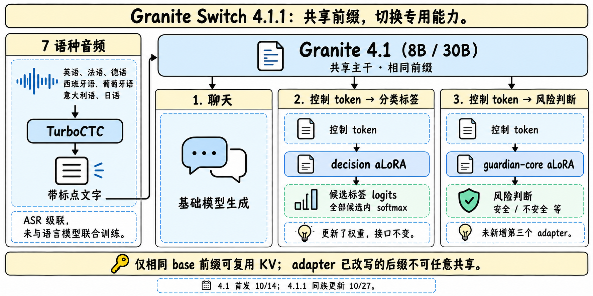

Granite Switch 4.1
日期、模型和组件先分开
HF 模型卡的 Release Date 为 2026-10-14，IBM 团队在 HF 发布的博客日期为 2026-10-15。Atlas 使用原卡首次发布日期，另记录博客日期；两者只有日级信息，不推测小时和时区。
30B 的主干为 Granite 4.1，dense decoder，GQA / RoPE / SwiGLU / RMSNorm，128K 上下文。BUILD 清单列 64 层、hidden 4096、32 attention heads、vocab 100352。
| 组件 | 明确配置 | 不应误读为 |
|---|---|---|
| 基础模型 | Granite 4.1 8B / 30B | 新训练一套 4.2 主干 |
| decision aLoRA | 30B rank64、alpha128；覆盖注意力与 MLP 投影 | 每 token MoE 路由 |
| guardian-core aLoRA | 30B rank16、alpha64；覆盖 q/k/v/o | 整个 Guardian adapter 库 |
| ASR | Granite Speech 5.0 Turbo CTC，470M | 音频语言端到端联合训练 |
| 权重变化 | 30B base 28,865,728,512 → composed 29,989,814,272 | 两个 rank 本身就解释全部增量 |
| 许可 | Apache-2.0 | 任意业务已有安全认证 |
BUILD 给出的组合增量约 3.89%，还包含打包组件，不能只按 LoRA rank 解释总参数差异。4.1初版ASR先生成英文转写，4.1.1已扩展7语种，仍先转写再进入语言上下文，错误会沿后续决策传递。

手绘研读图，依据4.1.1原卡；不是官方消融。
4.1.1：同family更新，不改4.1首发
两张当前原卡明确：4.1首发10/14，revision4.1.1为2026-10-27。更新了decision aLoRA权重，prompt/invocation/readout接口不变；仍只有decision与guardian-core两个adapter，不是第三个adapter或Granite4.2正代。另同步TurboCTC多语言路径。main跟随最新版本，复现旧版需显式使用granite-switch-4.1-30b或granite-switch-4.1-8btag；新版tag为granite-switch-4.1.1-30b/8b，不能只固定仓库名。
原卡提供新版Tech Blog链接，但本轮官方URL返回401，网页读取同样失败，未绕过访问限制，也不假装读过。当前变化以两张可公开读取的HF原卡为证据；旧发布博客继续保留，两个版本卡均已归档。
aLoRA 的开关有时间边界
检测控制 token 后，系统在一段连续生成跨度内激活对应 adapter，影响所有层。它是一种粗粒度能力切换，不是 MoE 对每个 token 选专家，也不是多个 Agent 各自独立思考。
关键工程机制是 KV normalization：切换前的 base 前缀 KV 可共享，并不缓存另一个 adapter 的内部状态。要复用的是相同 base prefix、相同切换边界。不能把 adapter 已经修改过的后缀 KV 当作任意 adapter 都能读取的共享缓存。
当大量候选动作共享长环境描述时，这种设计可能减少重复预填充。但 adapter 路由、音频转写、后缀生成、通信仍有成本；博客所说接近零额外 VRAM，不能解释为整个系统零开销。
Decision：分数是候选标签上的概率，不是聊天的自信
Decision 训练的是单 token 标签分类，并对候选标签 logits 做 softmax。设候选标签 token 为 t1…tn，正确的条件分布应为：
$$P(t_i\mid x,\{t_j\})=\frac{\exp(z_i)}{\sum_j\exp(z_j)}.$$
第一步检查每个标签确实是一个独立 token，且不同选项不映射到同一个 token。获取这些 token 的 logprob 后，要在候选集合内重新归一化。不能把全词表概率直接称为选项概率，也不能靠重复采样答案频次替代这个接口。
vLLM 的 logprob_token_ids 最多一次请求 128 个 token。选项多时，保持完全相同 prompt / decoding 条件，分块取得各 token 的全词表 logprob，再在完整候选集上统一 softmax；不能每块各自归一化后直接拼接。
安全 adapter 则可以输出含 score 的 JSON，如 yes/no 结果；它不是同一个 decision label 分布。当前打包只有 guardian-core 与 decision，不自动包含其他库里的 factuality、correction、policy 等 adapter。
Decision Index：能比较什么，不能比较什么
当前卡标明4.1.1在Jev Decision Index v0.3上的结果。旧4.1卡为public fast 1,068样本；新卡删除了这一样本量说明，并改称Overall为chance-corrected weighted aggregate。因此保留旧数值作历史，不能直接相减宣称纯adapter增益。
| 项目 | 当前30B / 4.1.1 | 当前8B / 4.1.1 | 旧30B / 4.1历史快照 |
|---|---|---|---|
| Overall | 51.33 | 46.72 | 50.1 |
| Knowledge | 34.8 | 28.7 | 32.4 |
| Language | 58.5 | 53.1 | 58.6 |
| Retrieval | 59.8 | 60.4 | 49.8 |
| Tools | 69.0 | 63.4 | 76.5 |
| Arts | 25.9 | 19.0 | 26.4 |
当前30B并非每一分项都高于8B，例如Retrieval 59.8低于60.4；不以总分替代任务适配。旧卡local / hosted约0.6points的一致性观察仅适用旧测试，不能套到新版。旧数据图仍保存在原始历史材料，本次正文以当前表为准，不再展示过时柱图。
原卡评测部分提到固定 decision-engine system prompt，而使用指引强调无 system prompt 以共享 prefix。两条配方不能自动视为同一个评测设置；复现前应确认具体 benchmark 配置，不把“删 system prompt 仍能复现全部成绩”当已证实事实。
博客的 Doom 60–100 decisions/s 和另一方案约 10/s 是演示配置，不是完整匹配硬件、任务与客户端的通用对照；本笔记不将它作为固定倍数收益。
部署与失败传播
4.1.1当前卡建议Python≥3.11且<3.14、granite-switch≥0.1.1、torch≥2.11、transformers≥5.16且≤5.17.0、vLLM≥0.26且<0.31。版本边界是发布时说明，升级后需重新验收控制 token、adapter 载入与概率接口。
4.1.1的TurboCTC路径现支持英、法、德、西、葡、意、日7语种，输出标点与大小写并从音频检测语言；旧4.1的英文、小写无标点限制不再代表当前版本。但它仍是ASR级联，未与LLM或adapter联合训练，也不支持任意decode-time steering，不能称为端到端音频理解升级。录音中的否定词、数值或实体识别错，后续 Decision 仍可能给出很尖锐的概率分布；“很确定地理解错”必须被单列。
Mellea 的 Guardian intrinsic 已有使用路径，Decision intrinsic 当时仍是计划，不能写成全部已上线。基座、adapter、ASR 与 SDK 要分别锁定 revision。
来源与导航
- HF Model Card · 30B；本地原卡
- HF Model Card · 8B
- Tech Blog · IBM 官方团队
- Tech Blog · 4.1.1（本轮401，未读）
- 30B 组合清单
- Granite 4.1 主干
📊 相关可视化：中文 Poster